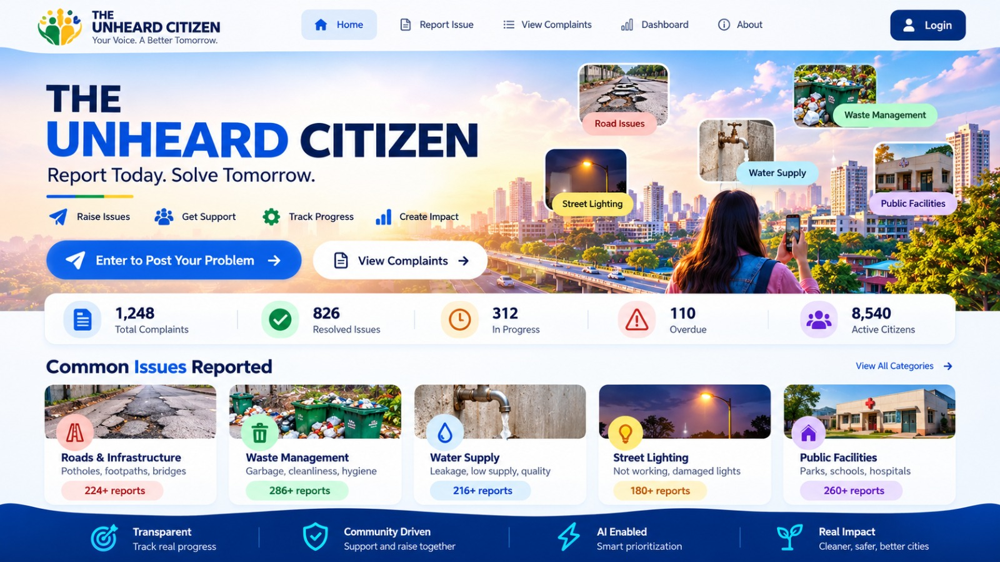

YOUR VOICE MAKES A DIFFERENCE
Report a Community Issue
Share the details so the right team can review the issue.
STAY INFORMED
Community Reports
Search reports and follow their progress transparently.
Showing sample records until the backend is connected.
COMMUNITY AT A GLANCE
Impact Dashboard
A clearer view of issues raised and progress made.
Report status overview
Live complaint status distribution
OUR PURPOSE
Every voice matters.
The Unheard Citizen helps communities raise concerns, follow progress and make local services more accountable.
Transparent tracking
Reports should have clear statuses and updates, so citizens can understand what happens next.
Community-led
People can bring overlooked local problems to attention and help decision-makers see recurring needs.
AI-assisted review
AI may suggest categories, priority and possible duplicates. A human reviewer remains responsible for decisions.
STAFF WORKSPACE · DEMO
Admin Command Centre
Review reports, coordinate action and monitor resolution.
Complaint review queue
Inspect each report and update its status.
| Report | Category | Location | AI suggestion | Status | Update status |
|---|
✦
Human-led AI review
AI can suggest a category, priority and potential duplicate matches. These are recommendations only. Review the report and evidence before taking action; never automatically reject a report based only on an AI flag.